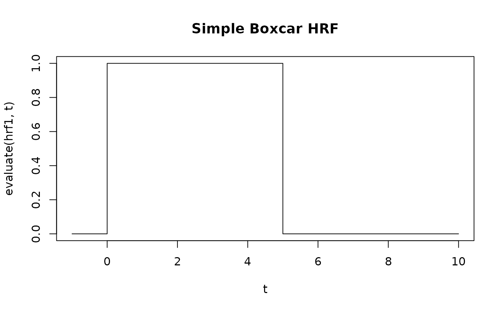

Creates a simple boxcar (step function) HRF that is constant within a time window starting at t=0 and zero outside. Unlike traditional HRFs, this has no hemodynamic delay - it represents an instantaneous response.
Arguments
- width
Duration of the boxcar window in seconds.
- amplitude
Height of the boxcar (default: 1).
- normalize
Logical; if
TRUE, the boxcar is scaled so that its integral equals 1 (i.e., amplitude = 1/width). This makes the regression coefficient interpretable as the mean signal in the window. Default isFALSE.
Value
An HRF object that can be used with regressor() and other
fmrihrf functions.
Details
When used in a GLM, the estimated coefficient represents a (weighted) average
of the data within the specified time window. If normalize = TRUE, the
coefficient directly estimates the mean signal in that window.
For delayed windows (not starting at t=0), use lag_hrf to shift
the boxcar in time.
Note on durations
The width is fixed when the HRF is created. The duration
parameter in regressor() does not modify the boxcar
width—it controls how long the neural input is sustained (which then gets
convolved with this HRF). For trial-varying boxcar widths, use a list of HRFs:
widths <- c(4, 6, 8)
hrfs <- lapply(widths, function(w) hrf_boxcar(width = w, normalize = TRUE))
reg <- regressor(onsets = c(0, 20, 40), hrf = hrfs)See also
hrf_weighted for weighted/shaped boxcars,
lag_hrf to shift the window in time
Other hrf_functions:
hrf_basis_lwu(),
hrf_bspline(),
hrf_gamma(),
hrf_gaussian(),
hrf_inv_logit(),
hrf_lwu(),
hrf_mexhat(),
hrf_sine(),
hrf_spmg1(),
hrf_time(),
hrf_weighted()
Examples
# Simple boxcar of 5 seconds width
hrf1 <- hrf_boxcar(width = 5)
#> Warning: Parameters width, amplitude, normalize are not arguments to function boxcar[5] and will be ignored
t <- seq(-1, 10, by = 0.1)
plot(t, evaluate(hrf1, t), type = "s", main = "Simple Boxcar HRF")

# Normalized boxcar - coefficient will estimate mean signal in window
hrf2 <- hrf_boxcar(width = 5, normalize = TRUE)
#> Warning: Parameters width, amplitude, normalize are not arguments to function boxcar[5] and will be ignored
# integral is now 1, so beta estimates mean(Y[0:5])
# Use in a regressor with trial-varying widths
hrf_short <- hrf_boxcar(width = 4, normalize = TRUE)
#> Warning: Parameters width, amplitude, normalize are not arguments to function boxcar[4] and will be ignored
hrf_long <- hrf_boxcar(width = 8, normalize = TRUE)
#> Warning: Parameters width, amplitude, normalize are not arguments to function boxcar[8] and will be ignored
reg <- regressor(onsets = c(0, 20), hrf = list(hrf_short, hrf_long))
# For delayed windows, use lag_hrf decorator
hrf_delayed <- lag_hrf(hrf_boxcar(width = 5), lag = 10) # Window from 10-15s
#> Warning: Parameters width, amplitude, normalize are not arguments to function boxcar[5] and will be ignored